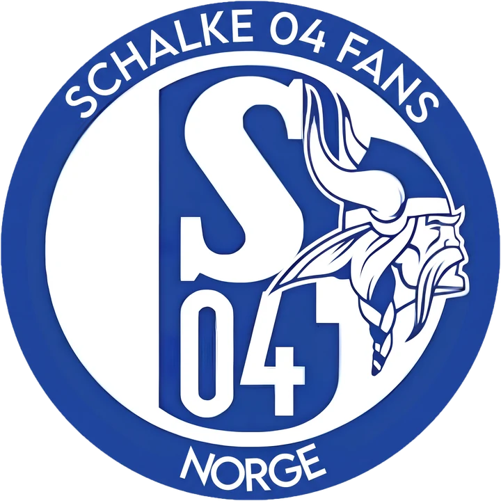

Glück auf,
Oslo.
Fanklubben for norske Schalke-supportere.
Er du fan av Schalke 04? Meld deg gjerne inn i supporterklubben..
Neste treff
Alle treff er åpne for de som heier på Schalke. Nye ansikter i blått og hvitt er alltid velkomne.
Bli medlem
Du trenger ikke være ekspert på tysk fotball. Du trenger bare å heie på Schalke.
- Send inn skjemaetDet tar to minutter.
- Betal kontingentenDu får betalingsinformasjon i svaret vi sender deg.
- Kom på neste treffDu får invitasjon til medlemsgruppen og hilser på de andre.
Kontingent:
Meld deg inn
Blått og hvitt, fra Oslo
Schalke 04 Fans Norge samler norske supportere av Gelsenkirchen-klubben. Vi ser kampene sammen, møtes til hyggelig lag og ønsker også å arrangere turer til Veltins-Arena i fremtiden.
- Kampvisninger
- Vi ser Schalke på storskjerm i Oslo.
- Medlemskvelder
- Quiz, pizza og prat om alt fra taktikk til gamle helter.
- Turer til Gelsenkirchen
- Fellesreiser til hjemmekamper for medlemmer som vil være med.
Spørsmål
Må jeg bo i Oslo for å bli medlem?
Nei. Treffene holdes i Oslo, men medlemmer fra hele Norge er velkomne.
Må jeg kunne tysk?
Absolutt ikke.
Hva får jeg som medlem?
Invitasjon til kampvisninger og medlemskvelder, mulighet til å bli med på turer til Gelsenkirchen, og et fellesskap med andre norske Schalke-fans.